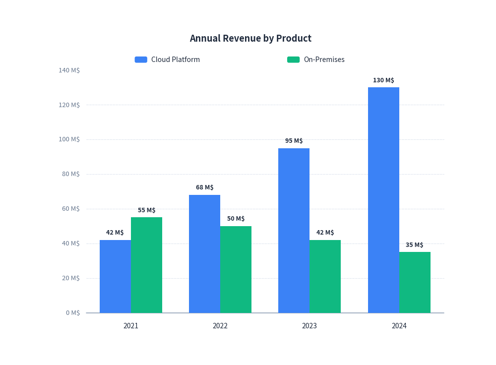
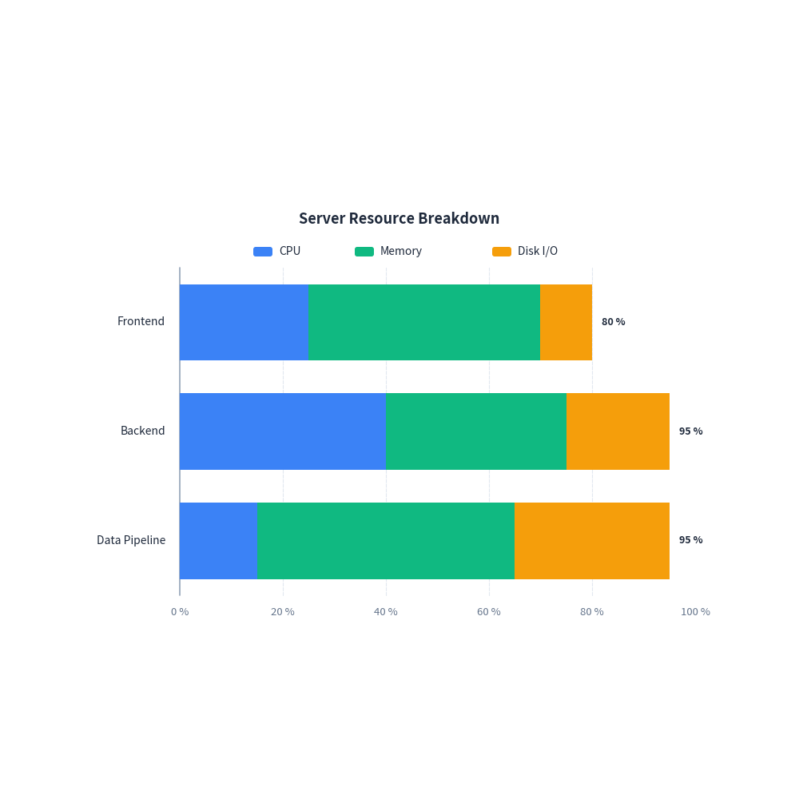
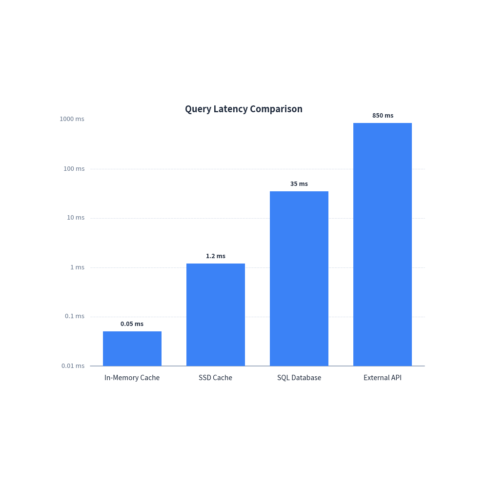
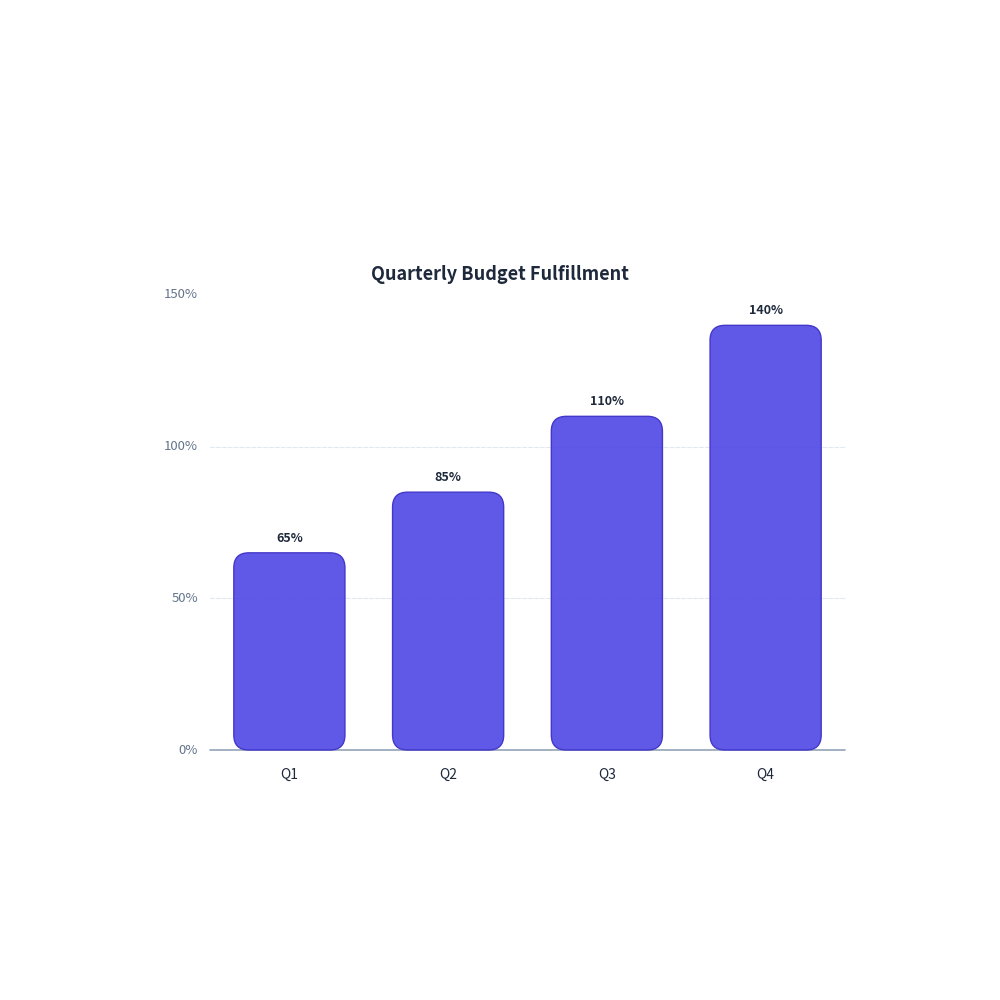

Bar Chart Guide
drawlib.charts.BarChart provides flexible vertical and horizontal bar charts with support for grouping, stacking, custom ticks, and logarithmic scales.
1. Quick Start: Grouped Bar Chart
A vertical grouped bar chart compares multiple series across categories:
from drawlib import canvas
from drawlib.charts import BarChart
canvas.initialize()
chart = BarChart(
categories=["2021", "2022", "2023", "2024"],
width=80,
height=60,
title="Annual Revenue by Product",
show_values=True,
)
chart.add_series("Cloud Platform", [42.0, 68.0, 95.0, 130.0])
chart.add_series("On-Premises", [55.0, 50.0, 42.0, 35.0])
chart.configure_y_axis(unit="M$", show_grid=True)
chart.draw(xy=(10.0, 20.0))

2. Horizontal Stacked Bar Chart
Horizontal stacked bars are ideal for visualizing resource breakdowns, survey responses, or task distributions:
from drawlib import canvas
from drawlib.charts import BarChart
canvas.initialize()
chart = BarChart(
categories=["Frontend", "Backend", "Data Pipeline"],
width=80,
height=55,
orientation="horizontal",
bar_mode="stack",
title="Server Resource Breakdown",
show_values=True,
)
chart.add_series("CPU", [25.0, 40.0, 15.0])
chart.add_series("Memory", [45.0, 35.0, 50.0])
chart.add_series("Disk I/O", [10.0, 20.0, 30.0])
chart.configure_x_axis(unit="%")
chart.draw(xy=(10.0, 20.0))

3. Logarithmic Scale Benchmark
For latency measurements, algorithmic complexity, or exponential data across several orders of magnitude, set scale="log" on the value axis:
from drawlib import canvas
from drawlib.charts import BarChart
canvas.initialize()
chart = BarChart(
categories=["In-Memory Cache", "SSD Cache", "SQL Database", "External API"],
width=80,
height=60,
title="Query Latency Comparison",
show_values=True,
)
chart.add_series("Latency", [0.05, 1.2, 35.0, 850.0])
chart.configure_y_axis(scale="log", unit="ms")
chart.draw(xy=(10.0, 20.0))

4. Custom Ticks & Formatting
You can customize ticks, intervals, unit labels, and number formatting via configure_y_axis or configure_x_axis:
from drawlib import canvas
from drawlib._core.l3_styles import Style
from drawlib.charts import BarChart
canvas.initialize()
chart = BarChart(
categories=["Q1", "Q2", "Q3", "Q4"],
width=75,
height=55,
title="Quarterly Budget Fulfillment",
r=1.5,
show_values=True,
)
chart.add_series(
"Fulfillment",
[65.0, 85.0, 110.0, 140.0],
style=Style(fill_color=(79, 70, 229, 0.9), line_color=(67, 56, 202, 1.0), line_width=1.0),
)
chart.configure_y_axis(
ticks=[0.0, 50.0, 100.0, 150.0],
format="{:.0f}%",
show_grid=True,
)
chart.draw(xy=(12.5, 20.0))

5. API Reference
BarChart
| Parameter | Type | Default | Description |
|---|---|---|---|
categories |
list[str] |
Required | Names of category bins along the category axis. |
width |
float |
80.0 |
Chart bounding width. |
height |
float |
50.0 |
Chart bounding height. |
orientation |
"vertical" | "horizontal" |
"vertical" |
Direction of bars. |
bar_mode |
"group" | "stack" |
"group" |
Grouped side-by-side or stacked on top. |
bar_width_ratio |
float |
0.7 |
Relative thickness ratio within category slot (0.0 - 1.0). |
title |
str |
"" |
Chart title displayed at the top. |
legend_position |
"auto" | "top" | "bottom" | "right" | "none" |
"auto" |
Position of series legend. Automatically omitted if 1 series. |
r |
float |
0.0 |
Corner radius for bars. |
show_values |
bool |
False |
Whether to render numerical text labels on bars. |
Methods
add_series(name: str, values: list[float], color: ColorType | None = None, style: Style | None = None) -> BarSeriesconfigure_y_axis(...) -> Axisconfigure_x_axis(...) -> Axisdraw(xy: tuple[float, float] = (0.0, 0.0)) -> None